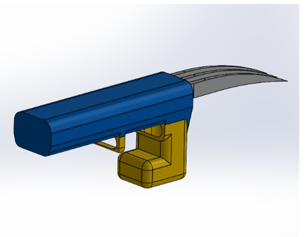
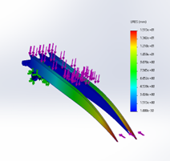

FlexiBot is a Wolverine-inspired wearable robot arm designed for a first-year mechanical engineering children's toy design competition. The brief was simple: design something a child could wear, that was structurally sound, safe, and actually fun. The result was a wrist-mounted extendable claw mechanism that went through three full design iterations before being 3D printed in PLA with 6061-T6 aluminum structural components — and won first place.

The first iteration used a hydraulic actuation concept — fluid-driven pistons extending the claw arms. While mechanically interesting, the hydraulic system introduced too much complexity for a wearable toy: sealing, fluid containment, and pressure management were all impractical at the scale and safety requirements of a children's product. It was scrapped after the concept phase.
The second iteration replaced hydraulics with an Arduino-controlled servo system. A single servo drove a linkage that extended and retracted the three claw arms simultaneously. This worked mechanically but introduced weight and wiring that made the wearable uncomfortable and fragile. The Arduino added unnecessary complexity for what was fundamentally a simple extend/retract motion.
The final iteration simplified back to a manual spring-loaded mechanism — lighter, more reliable, and child-safe. The design focus shifted to structural integrity, material selection, and manufacturability.
Material selection was driven by two competing constraints — strength and child safety. The claw arms needed to flex without fracturing under repeated use, while the wrist mount needed to remain rigid. FEA in SolidWorks was used to simulate displacement and stress distribution under representative loads, informing the decision to use PLA for the flexible arm components and 6061-T6 aluminum for the structural wrist mount hardware.
Moduli analysis confirmed that PLA's lower Young's modulus made it appropriate for the flexing claw geometry, while the aluminum mount could handle the repeated bending loads at the wrist interface without fatigue. Wall thicknesses and fillet radii were adjusted across iterations based on the FEA results to reduce stress concentrations at high-load regions.

The final design was modelled as a fully constrained SolidWorks assembly with motion studies validating the claw extension kinematics before committing to print. Parts were oriented for printability — minimising support material and ensuring layer lines ran perpendicular to primary load directions. The assembly was rapid prototyped and iterated on before the final print.
FlexiBot was my first experience running a full design loop from concept through FEA to physical prototype. The biggest lesson was how much the manufacturing method constrains the design — decisions that looked fine in CAD caused real problems in print orientation and support removal. Learning to design with the process in mind, not just the geometry, was the most transferable skill from this project.